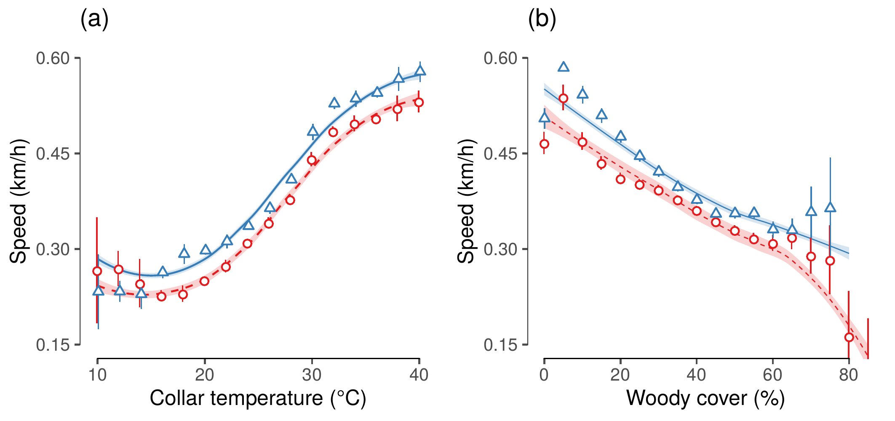

Section 3 Speed and collar temperature
Here we look at the relationship between elephant speed and collar temperature, as well as some other relevant factors that we think might influence elephant movement.
3.1 Load libraries
3.2 Load data from sources
Load the tracking data and the transformed slope data.
3.3 Speed and temperature
3.3.1 Run GAMM speed ~ temperature
# make id a factor
data$id = as.factor(data$id)
data$season = as.factor(data$season)
# run a GAMM using the mgcv package
mod.speed = bam(v ~ s(temp, k = 4) +
season +
woody.density +
s(id, bs = "re") +
s(hour, bs = "re"),
data = data)
# print model summary to file
if(!dir.exists("data/model_output")){
dir.create("data/model_output")
}
if(file.exists("data/model_output/model_gamm_speed.txt")){
file.remove("data/model_output/model_gamm_speed.txt")
}
R.utils::captureOutput(summary(mod.speed),
file = "data/model_output/model_gamm_speed.txt",
append = TRUE)Print the GAMM summary.
Family: gaussian
Link function: identity
Formula:
v ~ s(temp, k = 4) + season + woody.density + s(id, bs = "re") +
s(hour, bs = "re")
Parametric coefficients:
Estimate Std. Error t value Pr(>|t|)
(Intercept) 252.55538 5.20079 48.56 <2e-16 ***
seasonwet 16.48085 0.86423 19.07 <2e-16 ***
woody.density -1.60256 0.03278 -48.89 <2e-16 ***
---
Signif. codes: 0 ‘***’ 0.001 ‘**’ 0.01 ‘*’ 0.05 ‘.’ 0.1 ‘ ’ 1
Approximate significance of smooth terms:
edf Ref.df F p-value
s(temp) 2.995 3 4716.1 <2e-16 ***
s(id) 12.890 13 131.2 <2e-16 ***
s(hour) 0.991 1 112.6 <2e-16 ***
---
Signif. codes: 0 ‘***’ 0.001 ‘**’ 0.01 ‘*’ 0.05 ‘.’ 0.1 ‘ ’ 1
R-sq.(adj) = 0.0667 Deviance explained = 6.68%
fREML = 1.9511e+06 Scale est. = 52787 n = 2845723.3.2 Prepare speed ~ temp plot data
# prepare data for plotting
ele.speed.temp =
data %>%
mutate(v.pred = predict(mod.speed,
newdata = ., scale = "response",
allow.new.levels = T),
temp = plyr::round_any(temp,2)) %>%
ungroup() %>%
group_by(season, temp) %>%
summarise(v.mean = mean(v),
v.sd = sd(v),
n.v = length(v),
pred.mean = mean(v.pred, na.rm = T),
pred.sd=sd(v.pred, na.rm = T),
pred.n = length(v.pred)) %>%
mutate(v.ci = qnorm(0.975)*v.sd/sqrt(n.v),
ci.pred = qnorm(0.975)*pred.sd/sqrt(pred.n))3.3.3 Prepare Figure 4 (A): Speed and temperature
# figure for speed and temperature
fig_speed_temp =
ele.speed.temp %>%
filter(temp %in% 10:40) %>%
ggplot()+
geom_rangeframe(data = data_frame(x=c(10,40), y = c(0.15,0.6)),aes(x,y))+
geom_smooth(aes(x = temp, y = pred.mean*2/1e3,
col = season, fill = season, lty = season),
alpha = 0.2, lwd = 0.5)+
geom_pointrange(aes(x = temp, y = v.mean*2/1e3,
ymin = (v.mean-v.ci)*2/1e3, ymax = (v.mean+v.ci)*2/1e3,
col = season, shape = season),
fill = "white", size = 0.4, stroke =0.7, lty = 1,
position = position_dodge(width = 0.3))+
scale_fill_brewer(palette = "Set1")+
scale_color_brewer(palette = "Set1")+
scale_shape_manual(values=c(21,24))+
scale_linetype_manual(values=c("dashed","solid"))+
theme_few()+
theme(panel.border = element_blank(),
legend.position = "none")+
coord_cartesian(ylim=c(0.15,0.6))+
scale_y_continuous(breaks = seq(.15,.6,.15))+
labs(x = "Collar temperature (°C)", y = "Speed (km/h)",
col = "Season", fill = "Season", title="(a)")3.3.4 Prepare data for speed ~ woodland plot
# prepare data
ele.speed.wood =
as_data_frame(data) %>%
mutate(v.pred = predict(mod.speed,
newdata = ., scale = "response", allow.new.levels = T)) %>%
dplyr::select(woody.density, v, v.pred, season) %>%
mutate(v2 = v*2/1e3,
v.pred2 = v.pred*2/1e3) %>%
dplyr::select(-v, -v.pred) %>%
tidyr::gather(var, value, -woody.density, -season) %>%
group_by(season, wood = plyr::round_any(woody.density, 5),var) %>%
summarise_at(vars(value), list(mean=mean, sd=sd, length=length)) %>%
mutate(ci = 1.96*sd/sqrt(length))3.3.5 Prepare Figure 4 (B): Speed and woody cover
#review figs: speed vs slope, speed vs woody density
fig_speed_wood = ggplot()+
geom_smooth(data = ele.speed.wood %>% filter(var == "v.pred2"),
aes(x = wood, y = mean, col = season, fill = season, lty = season),
alpha = 0.2, size = 0.3)+
geom_pointrange(data = ele.speed.wood %>% filter(var == "v2"),
aes(x = wood, ymin = mean-ci, ymax = mean+ci, y = mean,
col = season, shape = season),
fill = "white", position = position_dodge(width = 0.3),
size = 0.4, stroke = 0.7)+
geom_rangeframe(data = data_frame(x=c(0,80),y=c(0.15,0.6)), aes(x,y))+
#facet_wrap(~var_name, scales = "free_x")+
scale_color_brewer(palette = "Set1")+
scale_fill_brewer(palette = "Set1")+
scale_linetype_manual(values=c(2,1))+
scale_shape_manual(values= c(21,24))+
theme_few()+
theme(panel.border = element_blank(),
legend.position = "none")+
labs(x = "Woody cover (%)", y = "Speed (km/h)", title = "(b)")+
scale_x_continuous(breaks = seq(0, 80, 20))+
scale_y_continuous(breaks = c(.15,.3,.45,.6), limits = c(NA, .6))+
coord_cartesian(ylim=c(.15,.6))3.4 Figure 4: Speed and temperature and woody cover
half = 85/25.4; full = 180/25.4
# export fig for temp measures
library(gridExtra)
figure_04_speed = grid.arrange(fig_speed_temp, fig_speed_wood, nrow = 1)
ggsave(figure_04_speed,
filename = "figs/figure_04_speed.pdf",
height = half, width = full)

(#fig:show_figure_04)Speed of elephant movement in relation to (a) collar temperature (at 2 ◦ C intervals) and (b) % woody cover (at 5 unit intervals) in the dry (red circles) and wet season (blue triangles). GAMM fit (lines) and 95% confidence intervals (vertical line ranges and shaded areas) are shown for each season separately.